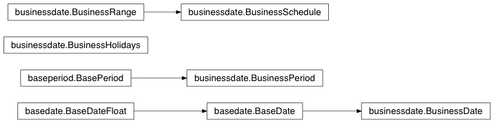

API Documentation¶
Class List¶
businessdate.BusinessDate |
fundamental date class |
businessdate.BusinessPeriod |
class managing date periods like days, weeks, years etc. |
businessdate.BusinessRange |
range like class to build date list |
businessdate.BusinessSchedule |
class to build date schedules incl. start and end date |
businessdate.BusinessHolidays |
holiday calendar class |
Inheritance Diagram¶
Business Object Classes¶
-
businessdate.BASE_DATE= 42369¶ int – Excel representation of 31.12.2015
-
class
businessdate.BusinessDate[source]¶ Bases:
basedate.BaseDatefundamental date class
Parameters: date_value (int, float, string or datetime.date) – input value to create BusinessDate instance Returns: BusinessDate creates new BusinessDate either from int, float, string, datetime.date therefore the following will create the same
BusinessDate(datetime.date(2015, 12, 31)) BusinessDate(20151231) BusinessDate(2015-12-31) BusinessDate(31.12.2015) BusinessDate(12/31/2015) BusinessDate(42369) BusinessDate(42369.0) BusinessDate(735963) BusinessDate(735963.0) BusinessDate()
caution: recommended is the use of classmethods BusinessDate.from_string, from_date etc.
-
add_business_days(days_int, holiday_obj=None)[source]¶ private method for the addition of business days, used in the addition of a BusinessPeriod only
Parameters: - d (BusinessDate) –
- days_int (int) –
- holiday_obj (list) –
Returns: BusinessDate
-
add_months(month_int)[source]¶ addition of a number of months
Parameters: - d (BusinessDate) –
- month_int (int) –
Return bankdate:
-
add_period(p, holiday_obj=None)[source]¶ addition of a period object
Parameters: - d (BusinessDate) –
- p (BusinessPeriod or str) –
- holiday_obj (list) –
Return bankdate:
-
static
days_in_month(year, month)[source]¶ returns number of days for the given year and month
Parameters: - year (int) – calendar year
- month (int) – calendar month
Return int:
-
static
days_in_year(year)[source]¶ returns number of days in the given calendar year
Parameters: year (int) – calendar year Return int:
-
diff(end_date)[source]¶ difference expressed as a tuple of years, months, days (see also the python lib dateutils.relativedelta)
Parameters: - start_date (BusinessDate) –
- end_date (BusinessDate) –
Return (int, int, int):
-
static
from_businessdate(d)[source]¶ copy constructor
Parameters: d (BusinessDate) – Return bankdate:
-
static
from_date(datetime_date)[source]¶ construct BusinessDate instance from datetime.date instance, raise ValueError exception if not possible
Parameters: datetime_date (datetime.date) – calendar day Return bool:
-
static
from_string(date_str)[source]¶ construction from the following string patterns ‘%Y-%m-%d’ ‘%d.%m.%Y’ ‘%m/%d/%Y’ ‘%Y%m%d’
Parameters: date_str (str) – Return BusinessDate:
-
is_business_day(holiday_obj=None)[source]¶ :param list holiday_obj : datetime.date list defining businessholidays :return: bool
method to check if a date falls neither on weekend nor is holiday
-
static
is_businessdate(in_date)[source]¶ checks whether the provided date is a date :param BusinessDate, int or float in_date: :return bool:
-
static
is_leap_year(year)[source]¶ returns True for leap year and False otherwise
Parameters: year (int) – calendar year Return bool:
-
-
class
businessdate.BusinessHolidays(iterable=None)[source]¶ Bases:
listholiday calendar class
Parameters: iterable (iterable) – sequence of holiday dates
-
class
businessdate.BusinessPeriod(period_in='', holiday=None, years=0, months=0, days=0, businessdays=0)[source]¶ Bases:
baseperiod.BasePeriodclass managing date periods like days, weeks, years etc.
Parameters: - period_in –
- holiday –
- years –
- months –
- days –
- businessdays –
representation of a time BusinessPeriod, similar to dateutils.relativedelta, but with additional business day logic
-
class
businessdate.BusinessRange(start, stop=None, step=None, rolling=None)[source]¶ Bases:
listrange like class to build date list
Parameters: - start (BusinessDate or int or str) – date to begin schedule, if stop not given, start will be used as stop and default in rolling to BusinessDate()
- stop (BusinessDate or int or str) – date to stop before, if not given, start will be used for stop instead
- step (BusinessPeriod or str) – period to step schedule, if not given 1 year is default
- rolling (BusinessDate or int or str) – date to roll on (forward and backward) between start and stop, if not given default will be start
range like class to build BusinessDate schedule from rolling date and BusinessPeriod
-
class
businessdate.BusinessSchedule(start, end, step, roll=None)[source]¶ Bases:
businessdate.BusinessRangeclass to build date schedules incl. start and end date
Parameters: - start (BusinessDate) – start date of schedule
- end (BusinessDate) – end date of schedule
- step (BusinessPeriod) – period distance of two dates
- roll (BusinessDate) – origin of schedule
convenient class to build date schedules a schedule includes always start and end date and rolls on roll, i.e. builds a sequence by adding and/or substracting step to/from roll. start and end slice the relevant dates.
-
businessdate.DATE_FORMAT= '%Y%m%d'¶ string – basic date format as string
-
businessdate.DEFAULT_HOLIDAYS= []¶ list – list of dates of default holiday calendar
-
businessdate.easter(year)[source]¶ This method was ported from the work done by GM Arts, on top of the algorithm by Claus Tondering, which was based in part on the algorithm of Ouding (1940), as quoted in “Explanatory Supplement to the Astronomical Almanac”, P. Kenneth Seidelmann, editor.
More about the algorithm may be found at:
http://users.chariot.net.au/~gmarts/eastalg.htm
and
Base Object Classes¶
-
class
basedate.BaseDate[source]¶ Bases:
basedate.BaseDateFloatbase class for BusinessDate
-
class
basedate.BaseDateFloat[source]¶ Bases:
float-
static
add_days(d, days_int)[source]¶ adds number of days to a date :param BaseDateFloat d: date to add days to :param int days_int: number of days to add :return BaseDate: resulting date
-
static
add_years(d, years_int)[source]¶ adds number of years to a date :param BaseDateFloat d: date to add years to :param int years_int: number of years to add :return BaseDate: resulting date
-
day¶ day of date :return int:
-
static
diff_in_days(start, end)[source]¶ returns distance of two dates as number of days :param BaseDateFloat start: start date :param BaseDateFloat end: end date :return float: difference between end date and start date in days
-
static
diff_in_years(start, end)[source]¶ calculate difference between given dates in years. The difference corresponds to Act/365.25 year fraction
Parameters: - start (BaseDateFloat) – state date
- end (BaseDateFloat) – end date
Return float: difference between end date and start date in years
-
static
from_ymd(year, month, day)[source]¶ creates date for year, month and day :param int year: :param int month: :param int day: :return BaseDate:
-
month¶ month of date :return int:
-
static
to_ymd(d)[source]¶ returns date represented as tuple year, month, day :param BaseDateFloat d: :return tuple(int, int, int):
-
year¶ year of date :return int:
-
static
-
class
basedate.BaseDatetimeDate[source]¶ Bases:
datetime.date-
static
add_days(d, days_int)[source]¶ addition of a number of days
Parameters: - d (BaseDatetimeDate) –
- days_int (int) –
Return BaseDatetimeDate:
-
static
add_years(d, years_int)[source]¶ addition of a number of years
Parameters: - d (BaseDatetimeDate) –
- years_int (int) –
Return BaseDatetimeDate:
-
static
diff_in_days(start, end)[source]¶ calculate difference between given dates in days
Parameters: - start (BaseDatetimeDate) – state date
- end (BaseDatetimeDate) – end date
Return float: difference between end date and start date in days
-
static
diff_in_years(start, end)[source]¶ calculate difference between given dates in years. The difference corresponds to Act/365.25 year fraction
Parameters: - start (BaseDatetimeDate) – state date
- end (BaseDatetimeDate) – end date
Return float: difference between end date and start date in years
-
static
-
basedate.DAYS_IN_YEAR= 365.25¶ float – basis for diff_in_years method
-
basedate.days_in_month(year, month)[source]¶ returns number of days for the given year and month
Parameters: - year (int) – calendar year
- month (int) – calendar month
Return int:
-
basedate.days_in_year(year)[source]¶ returns number of days in the given calendar year
Parameters: year (int) – calendar year Return int:
-
basedate.from_excel_to_ymd(excel_int)[source]¶ converts date in Microsoft Excel representation style and returns (year, month, day) tuple
Parameters: excel_int (int) – date as int (days since 1899-12-31) Return tuple(int, int, int):
-
basedate.from_ymd_to_excel(year, month, day)[source]¶ converts date as (year, month, day) tuple into Microsoft Excel representation style
Parameters: int, int) (tuple(int,) – int tuple year, month, day Return int:
-
basedate.is_leap_year(year)[source]¶ returns True for leap year and False otherwise
Parameters: year (int) – calendar year Return bool: